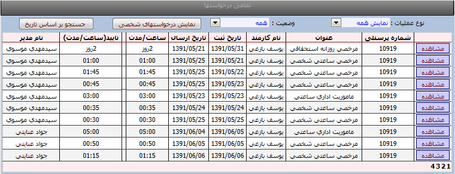

نمایش تمامی درخواستها
درخواستهایی که مدیر برای پرسنل زیر مجموعه خود ثبت کرده

فیلتر بر اساس درخواستهایی که توسط مدیر ثبت شده(این امکان برای مدیران می باشد)
1- مدیر برای خودش درخواست ثبت میکند
2- مدیر برای پرسنل زیر مجموعه اش درخواست ثبت میکند